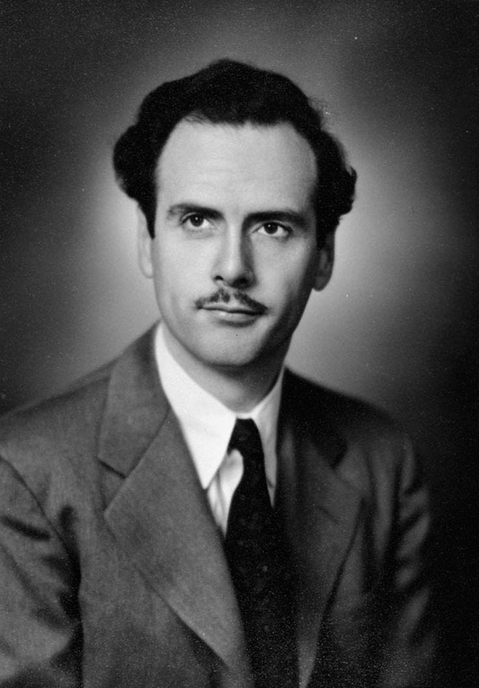
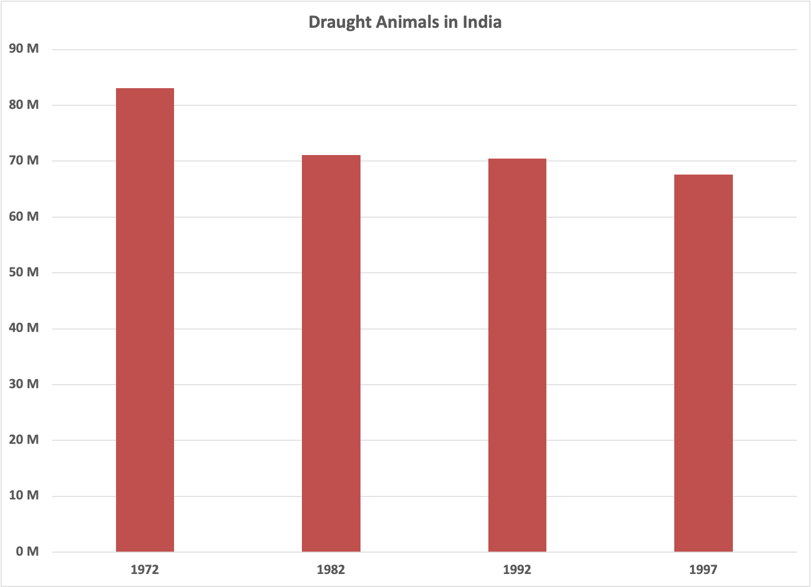
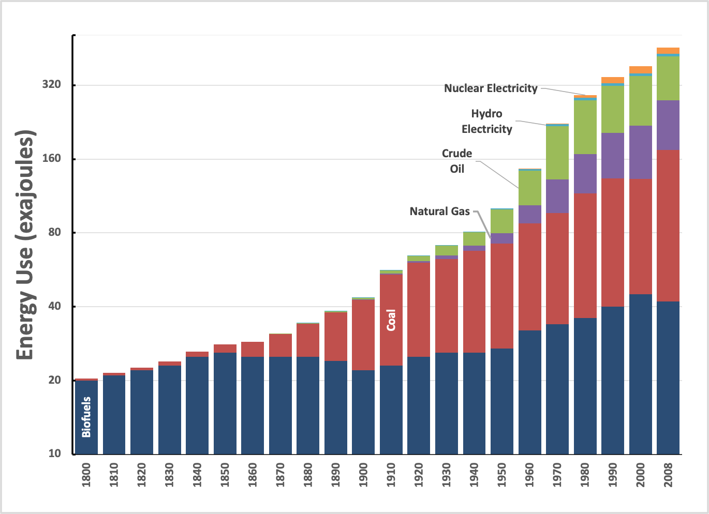

You can read Healing for free, and you can reach me directly by replying to this email.
If someone forwarded you this email, they’re asking you to sign up. You can do that below.
If you
really
want to help spread the word, then pay for the otherwise free subscription. I use any money I collect to increase readership through Facebook and LinkedIn ads.
Thank you for reading Healing the Earth with Technology. This post is public so feel free to share it.
Today’s read: 5 minutes.
A brief opening bit of anonymous doggerel, stolen from Marshall McLuhan’s classic, “The Medium is the Message”:

In modern thought, (if not in fact)
Nothing
is
that doesn’t
act
,
So that is reckoned wisdom which
Describes the scratch but not the itch.
Chapter 1 of Understanding Media: The Extensions of Man by Marshall McLuhan. (1964)
The point of this ditty is that wisdom comes from action, not description, and it’s relevant to today’s installment.
I was deep into preparing this week’s installment when a New York Times article appeared in my newsfeed, entitled “
There’s a Messaging Battle Right Now Over America’s Energy Future
”. It’s topical for my readers and illustrates an essential divide between what is
needed
and what is
possible
, so I thought I’d save material for next week while addressing this “news” item.
I urge you to read the article for context. In summary, it centers on the meaning of the set phrase “energy transition”, which is being used by both academic scientists and corporate executives to describe a vision of the future of the world’s energy supply. This phrase even has an intellectual set phrase of its own, a “floating signifier,” which, according to Dr. Anthony Leiserowitz of Yale’s Program on Climate Change Communication, means “a blank term that you can fill with your preferred definition.” That is like “climate change”, no? [See an earlier installment
1
for a discussion of this set phrase!]
So, let’s examine the two extreme definitions of “energy transition” and decide whether the battle is worth joining, shall we? “Transition” is a “process or period of changing from one state or condition to another”, so it is a change that is bounded by either “How?”, “When?”, or both.
On the one hand, the article cites an alleged scientific consensus on the meaning of an “energy transition” as “rapid phasing out of fossil fuels and the immediate scaling up of cleaner energy sources like wind, solar and nuclear.” This rapid, immediate transition is very steep, more of a step change, like flipping a switch. But where did this consensus come from? No definition of “energy transition” is found in nearly 4,000 pages of the most recent IPCC report
2
. Indeed, this report deliberately represents a scientific consensus, yet it wisely refrains from making specific recommendations, leaving that up to policymakers. So, where did it come from? I bet that it is a consensus among reporters who monitor the climate change space, based on conversations and publications from reputable academic scientists! Naturally, such scientists exclude those with industry connections since any relationship (even innocent) would lead to accusations of bias. Of course, we’d all agree with the academic scientists who believe that the sooner we curtail our carbon dioxide emissions, the better. But, since any practical solution involves massive industrialized changes in the world’s largest market, these same expert scientists are isolated from the “how” of the transition!
On the other hand, the article cites industry sources as interpreting an “energy transition” as a more gradual process. In this viewpoint, the transition begins with “a greater reliance on natural gas rather than coal, and a hope that new technologies such as carbon capture and sequestration can contain or reduce the amount of greenhouse gasses they produce.” In other words, these industry professionals are focusing on the “How?” of the transition. These opinionistas view natural gas as a cleaner alternative to coal,
3
acknowledge that carbon removal technologies involve “hope”. They also assert (perhaps self-serving) that a deliberate, slower transition is better.
At least the two sides agree on the direction of the transition! But the ivory tower “When?” intellectuals want an instantaneous global revolution while the industry “How?” professionals want it to be deliberate and evolutionary. Which side is closer to reality? Let’s ask history to guide us:
Looking at past energy transitions, how long do they typically take?
[Think about that for a moment before reading further. ]
It’s a trick question. There has
never
been an energy transition involving phasing out of an old energy source! That’s a problem for the “When?” crowd. Don’t believe me? You may have thought of some examples (put them in the comments, please, if you have one), so I’ll pick an obvious one. Surely, agriculture has seen an energy transition since ancient times! Mechanized farm equipment replaced draught animals, right? Well, that’s largely true in the Western world, but it’s not true even in emerging markets, and many subsistence farmers in sub-Saharan Africa don’t even have animals; they push their own plows!
To parameterize, let’s take a data-driven look at India—I didn’t have the opportunity to extend this chart (which dates from 2004), but it’s telling:

From
downtoearth.org.in
, a table entitled “Just about pulling: Draught animals in field operations in India.” Data includes cattle, buffalo, and camels.
While the population of animals used for farming is declining, small farmers in India cannot afford a tractor. So, even though the technology for mechanized tractors dates from the 19th century, many agriculture still involves “old” technology—oxen. And, of course, that’s a transition that the “When?” group wants the world to undo!
I pointed out earlier
4
that energy “transitions” in the past have been additive, not subtractive:

Global Energy Consumption since 1800. Data from Appendix Table in “Energy Transitions: History, Requirements, Prospects” by Vaclav Smil. Praeger (2010). The vertical axis is logarithmic to emphasize the persistence of all forms of energy.
As always, please judge for yourself which definition you prefer. I choose the meaning with the most teeth, emphasizing “How?” over “When?”. That doesn’t mean that we shouldn’t push for prompt action, only that the definition isn’t confrontational. If you object to the motives of the “How?” group, then consider that you’re supporting
ad hominem
and anecdotal attacks on the other “side”. Even though the New York Times believes that such antagonism is newsworthy, it is pointless when both sides agree on the objective. So let’s argue about “How?”, shall we?
Returning to the McLuhan citation in the opener, the “How?” group is describing the action, the “scratch,” while the “When?” group is pointlessly complaining about the “itch”. I’m aligned with reckoned wisdom.
Which it is. To a rough approximation, based on experimental chemistry, all of the energy in burning coal, half of the energy in burning petroleum, and a third of the energy in burning natural gas results in carbon dioxide production.